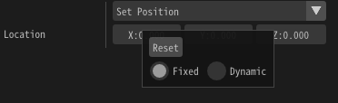

动态参数¶
概述¶
动态参数可以实现在特效在游戏中播放时动态地修改参数的值。 通过简单的代码控制参数。参数可以通过外部程序设置。
使用方法¶
基础¶


使用表达式¶
右键要使用表达式的参数并选择动态。 然后会显示一个选择表达式的文本框。
然后，选择你先前输入的表达式，这个表达式就会被应用到参数。

位置的参数是(0,0,0)。但是粒子出现在(2,0,0)，因为表达式改变了位置参数。

表达式中的函数¶
修改多个参数¶
x, y, z, w, 每个参数都是可修改的。 下面的输入将值分别修改为2, 3, 4, 5。 如果目标是颜色，x, y, z, w 对应RGBA。
@O.x = 2.0
@O.y = 3.0
@O.z = 4.0
@O.w = 5.0
参数¶
外部程序输入的参数可以通过面板中的数字输入框或运行时设置。
| 参数 | 说明 |
|---|---|
| @P.x @P.y @P.z @P.w | 动态参数应用之前的参数 |
| @In0 @In1 @In2 @In3 | 外部程序输入的值 |
| @GTime | 当前时间（秒） |
| @PTime | 父粒子生成至今的时间（s） |
函数¶
可以使用以下函数。
| 函数 | 说明 |
|---|---|
| sin(x) | 返回正弦值，x使用弧度制。 |
| cos(x) | 返回余弦值，x使用弧度制。 |
| rand() | 返回随机值 |
| rand(x) | 返回与x相关的随机值。如果x相同，则返回值也相同。 |
| step(edge,x) | 如果x大于edge，返回1.0。否则返回0。 |
目标¶
动态参数可应用于以下参数。
生成数量
生成速率
生成开始时间
生命周期
位置 - 固定，位置・速度・加速度，缓动
旋转 - 固定，角度・速度・加速度，缓动
缩放 - 固定，缩放・速度・加速度，缓动